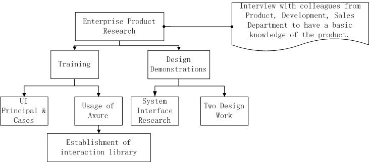
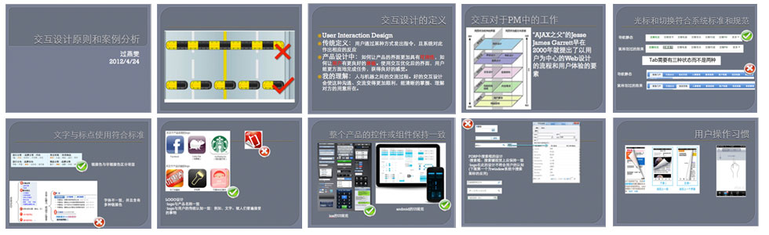
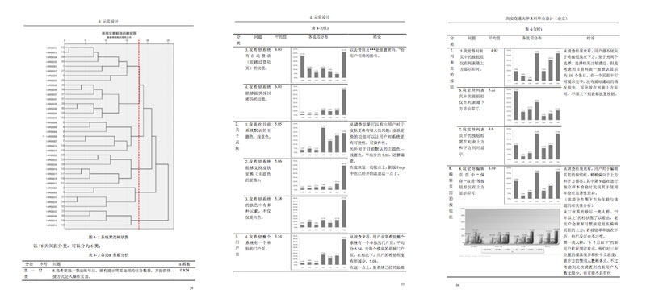
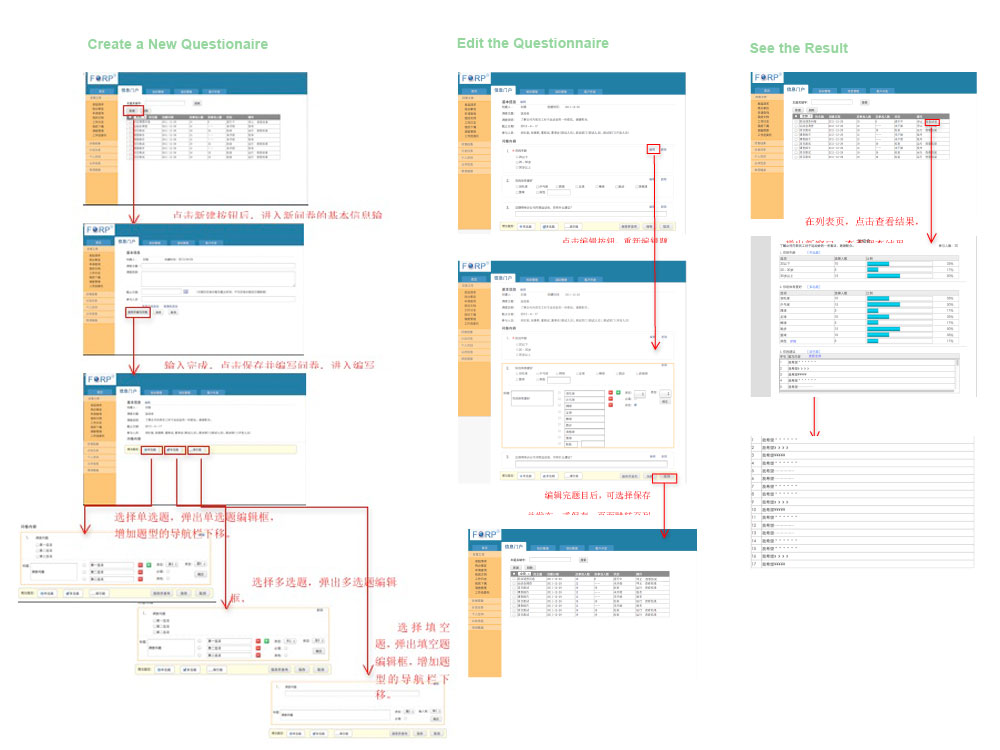
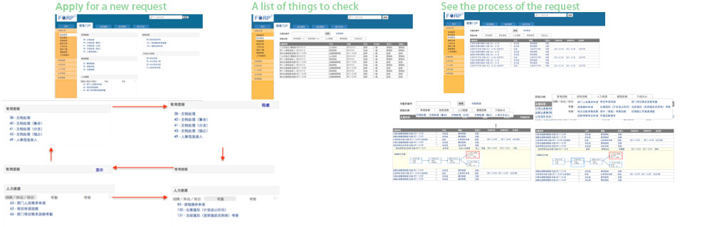

2012.3-6
User Resercher, Interaction designer
User Interview, User Survey,
Wireframing, Axure
The project is from Xiruan Software Comapany,Xi’an. And I finished my graduate thesis based on this project.The title of this thesis is The Interface Design of FORP(Flexible Operation Resource Platform. )
IThe main purpose of this project is to establish the awareness of User Experience Design in this company, to improve the interface design of FORP, to introduce several method of user research which include questionnaire survey, usability testing, focus group interviews, to build an interaction widget library which will increase efficiency of the employers and to summarize the difficulties and the related solutions during this process.

The employees in the company were trained to learn the principals of interface and interaction design, as well as the related software,Axure.
Here are some screenshots from my PPT which included some principals and cases about UX.

I designed a questionnaire about the system interface satisfication. And then 63 users answered this questions. I calculated these by SPSS.Then the results would be used as a reference for the new version.

In order to let them know more about UX design, I designed one work for them. At that time ,they were prepared to add a new survey fucnctin in their OA system, which means that the operator can make a suvery to other colleague through this OA system. And then I designed the wireframe of this function for them. In the past, this work was finished by th developer, so the interface was so disordered.

I designed another work. This work was to improve its current function, the process of application. In the past, the system only showed two status application, finish or check. However, the applicant wants to know which part the application stays at. So I need to add an interface about the detailed status of the application.
